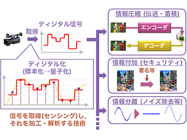
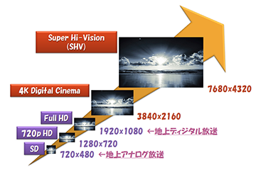

基盤信号処理プロジェクト／画像・映像圧縮符号化プロジェクト／音楽処理プロジェクト
図1は「画像処理」「医用画像」「マルチメディア信号処理」の関係を表しています．図を見て分かる通り，「医用画像」は「画像処理」のより応用的な分野であり，逆に「マルチメディア信号処理」は「画像処理」よりも更に基礎的かつ一般的な分野です．言い換えれば，「マルチメディア信号処理」は「画像処理」にも「医用画像」にも応用可能な技術ということになります．
| 図1：画像処理・医用画像・マルチメディア信号処理の関係 |
信号処理とは，ある信号を取得(センシング)し，それを加工・解析する技術のことです．得られたディジタル信号は様々なアプリケーションに応用する際にとても便利で，たとえば情報圧縮，情報付加，情報分離等に応用されます．
|  |
| 図2：信号処理とは |
信号処理によく使用されるのが周波数変換です(図3参照)．通常，ある周波数変換によって実時間信号を周波数信号に変え，その周波数帯域上で様々な処理を施した後に，逆変換し，画像を復元させます．周波数変換には一般的にフィルタバンクという技術が用いられます．フィルタバンクとは，様々な通過帯域のディジタルフィルタで構成され，信号の間引き処理や補間処理なども含んだ全体の処理を指します．FFT(高速フーリエ変換)，DCT(離散コサイン変換)，DWT(離散ウェーブレット変換)のような工学で広く用いられる変換もフィルタバンクに包括されます．私達は基盤信号処理プロジェクトとして，主にこのフィルタバンクの設計を行っています．
| 図3：画像のウェーブレット変換と逆変換 |
また，シャノン標本化定理を満たさない粗く標本化したデータからの高品質再生を目的とした圧縮センシング，著作権保護等のセキュアを考えた情報ハイディング等の研究も行っています．
映像解像度は鰻登りで大きくなっています．地上アナログ放送で使用されていたSD (Standard Definition)に始まり，現在の地上ディジタル放送ではFull HD (High Definition)が使用されています．しかし，近年ではDigital Cinemaに代表される4Kと呼ばれる解像度や，Super Hi-Vision (SHV)と呼ばれる4Kの4倍の解像度を持つ技術まで実用化段階に入ってきています．
|  |
| 図4：映像解像度の変遷 |
同時に，高ダイナミックレンジ(HDR)映像，高フレームレート映像，3D／多視点映像のような次世代映像が次々と生まれ，そのニーズが高まっています．しかしこれらは，たとえ同コンテンツであっても，その仕様に合わせたファイルをその都度用意しなければならないという問題点を抱えています．ファイルをその都度用意すれば，それだけファイル量が増加し，限られたストレージ容量や通信帯域を圧迫しかねません．
そこで私達が進めている研究の一つが，ワンソース／マルチユース符号化です．これは，空間解像度，時間解像度，色表現，画素値深度，視点解像度等々，ユーザが所望するデータに対し，同一コンテンツであるならばたった一つだけのファイルで対応しようという構想です．その第一段階として，医療や芸術分野で使用されるロスレス(可逆)符号化と，インターネットコンテンツ等に使用されるロッシー(非可逆)符号化を統合したロッシー・ロスレス統合符号化の研究を行っています．
| 図5：ワンソース／マルチユース符号化 |
携帯プレーヤーへの応用を目的とした圧縮やノイズリダクション手法等を研究しています．
Under construction...
Copyright © 2015 Image Science Lab. All rights Reserved.